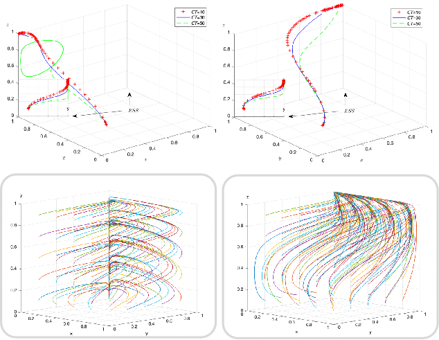
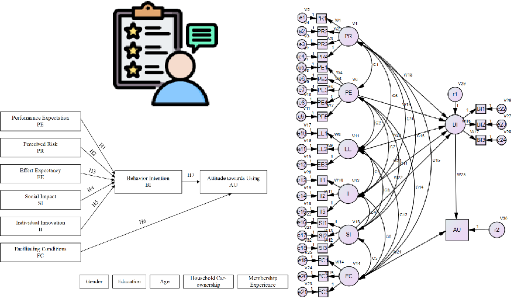
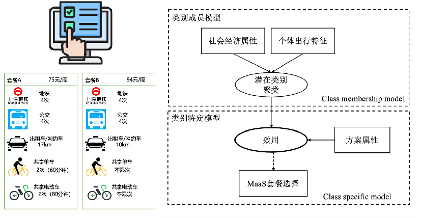
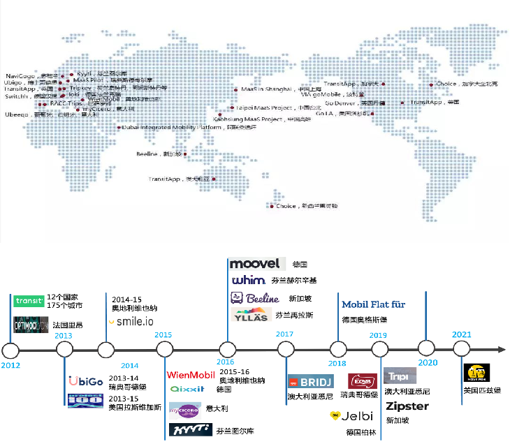
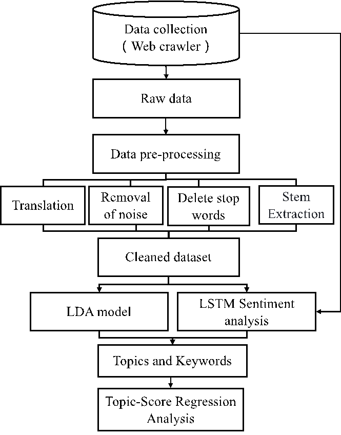
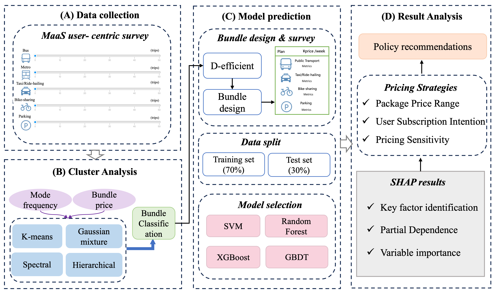

论文发表
* 通讯/主要贡献作者。
已发表 / Published
-

How stakeholders influence MaaS implementation? An analysis based on evolutionary game theory
-

A study on users’ willingness to accept mobility as a service based on UTAUT model
-

基于潜在类别选择模型的 MaaS 套餐偏好异质性分析
-

共享出行：重塑可持续交通的新动能
在审 / Under Review
-

An analysis of MaaS user comments based on LDA topic model
-

Examining MaaS Bundle Design and User Preferences through Interpretable Machine Learning
-
Examining MaaS Bundle Design and User Preferences through Interpretable Machine Learning